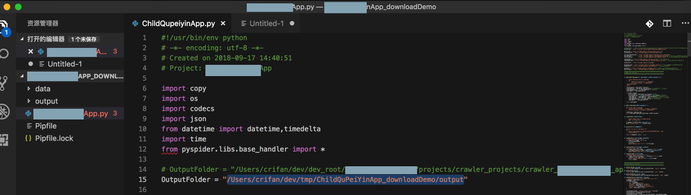

好习惯好逻辑
做事情要养成好的习惯和逻辑
下面举例说明：什么叫好的习惯和逻辑？
之前写了个爬虫，去爬取数据
其中需要保存爬取的数据到本地电脑中
- 好的习惯是：
- 在第一次写代码时，就对于要保存的数据的路径，去提取出一个：
- 全局的根目录
- 后续保存数据都是放在根目录下的子目录
- 全局的根目录
- 这样做的好处是：
- 万一，如果，后面的变更了要保存数据的路径
- 只要改变一处即可，不用多个保存的路径都去修改
- 万一，如果，后面的变更了要保存数据的路径
- -> 随着后续开发，真的遇到这种需求：
- 真的是只需要用同样代码，但是只是改动了爬取数据的保存路径即可。
- 所以此时只需，不改动其他代码，而只是改变根目录：
- 
- 就能实现需求了
- 所以此时只需，不改动其他代码，而只是改变根目录：
- 真的是只需要用同样代码，但是只是改动了爬取数据的保存路径即可。
- 在第一次写代码时，就对于要保存的数据的路径，去提取出一个：